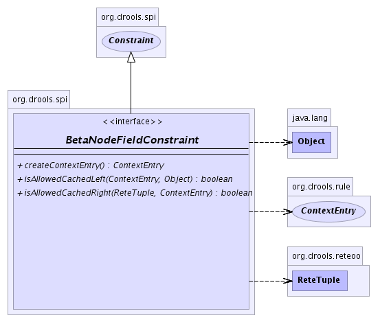

org.drools.spi
Interface BetaNodeFieldConstraint
- All Superinterfaces:
- java.lang.Cloneable, Constraint, RuleComponent, java.io.Serializable
- All Known Implementing Classes:
- AbstractCompositeConstraint, AndConstraint, InstanceEqualsConstraint, InstanceNotEqualsConstraint, MultiRestrictionFieldConstraint, MutableTypeConstraint, OrConstraint, PredicateConstraint, ReturnValueConstraint, TupleStartEqualsConstraint, VariableConstraint
public interface BetaNodeFieldConstraint
- extends Constraint
-
- 
isAllowedCachedLeft
boolean isAllowedCachedLeft(ContextEntry context,
java.lang.Object object)
isAllowedCachedRight
boolean isAllowedCachedRight(ReteTuple tuple,
ContextEntry context)
createContextEntry
ContextEntry createContextEntry()